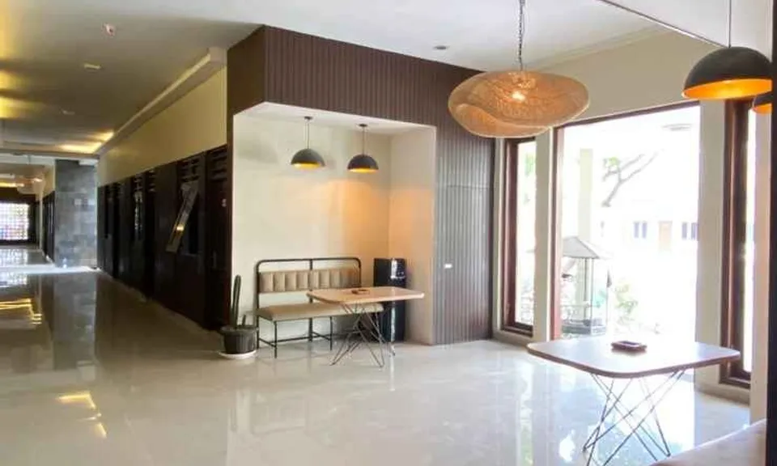

About Us
Hotel Majesty Didirikan Pada tahun 2005.
Bagi Anda, wisatawan yang menginginkan perjalanan yang nyaman dengan bujet terbatas, Hotel Majesty Kudus adalah tempat menginap yang tepat yang menyediakan fasilitas yang layak serta pelayanan yang luar biasa. Dari acara bisnis hingga pertemuan perusahaan, Hotel Majesty Kudus menyediakan layanan dan fasilitas lengkap yang Anda dan kolega butuhkan. Nikmati berbagai fasilitas hiburan untuk Anda dan seluruh keluarga di Hotel Majesty Kudus, tempat menginap yang luar biasa bagi liburan keluarga Anda. Jika Anda berencana untuk menginap dalam jangka waktu yang lama, menginap di Hotel Majesty Kudus adalah pilihan yang tepat untuk Anda. Menyediakan berbagai fasilitas dan layanan yang luar biasa.
Ulasan
"Bagus,,kamar bersih, staf nya ramah, kamar economy twin, dapet minum, handuk dan sabun..lokasi dekat dengan minimarket pas di depan hotel"
Santi qomariyah via Gmaps